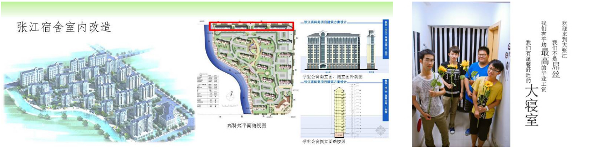
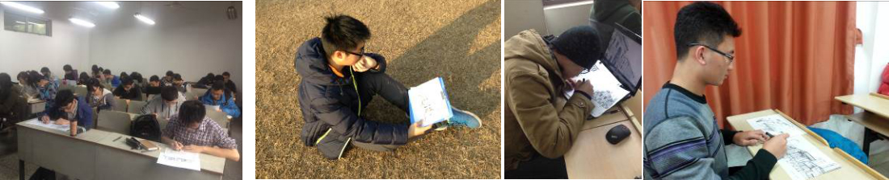
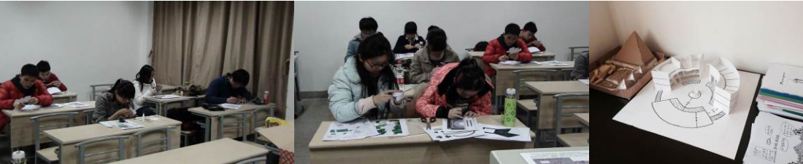
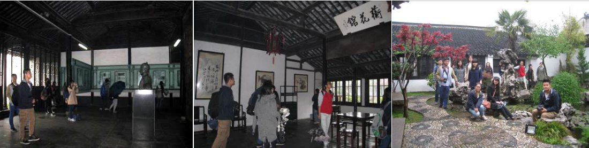

本课程强调实践教学既是重要的教学内容，也是实现教学目标的重要手段。具体包括：
设计实践：
在理论建构和审美鉴赏的基础上，本课程要求学生结合自己的审美理解参与设计项目，包括室内设计、建筑设计、景观设计的实践，如课程中开展过寝室改造、教学楼、图书馆室内外设计等。这种设计实践极大提升了学生的审美能力，帮助学生在实践中发掘审美潜能、激发审美热情、积累审美素养，受到学生的普遍喜爱。
绘图实践：
课程展示了很多古今中外优秀的建筑设计案例，并分析了很多目前世界闻名的景观规划案例中的创意和构思。在这个过程中，教师结合这些案例向学生展示了更多相关设计图，并讲解其中包含的设计思路和相关美学。通过对该建筑、环境类课程的学习，很多同学培养了出色的审美能力，并通过不断地欣赏潜移默化地提高了绘画能力。
模型制作：
在模型制作实践课中，学生根据老师平时授课的内容，根据每套模型提供的效果图进行纸模和木质景观模型的制作。实践课给了学生一个自己动手的机会，得以更加切身地感受到各式建筑从外观到内部结构的不同细节美与整体美，并培养学生的动手能力和合作精神。打破常规的授课模式，让学生自己动手的方式为课堂增添了许多乐趣，受到学生广泛好评。在搭建模型时，从模型的结构中学生也能够更好地体会景观和建筑设计的思路。
实地考察：
带领学生实地考查，在实地讲解建筑艺术、园林景观、遗产保护。实地考查形式课程能够让学生更好地感受建筑空间，更加深入地去理解和欣赏这种艺术的魅力，通过交流与思考，对建筑艺术也会有更新更好的解读。